Painting and decorating
CAP Peintre applicateur de revêtements. Sixteen English words of the trade: tools, objects and everyday gestures. Open to everyone.
Four steps: from French to English, listen and choose, match, and complete a sentence at work. The Listen button reads the word in British English.
Word list
| Image | Français | English | Audio |
|---|---|---|---|
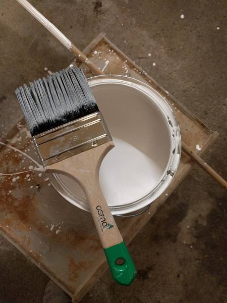 | la peinture | paint | |
 | le pinceau | paintbrush | |
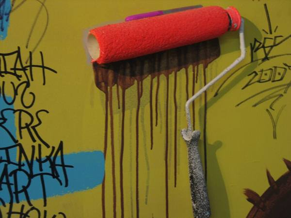 | le rouleau | paint roller | |
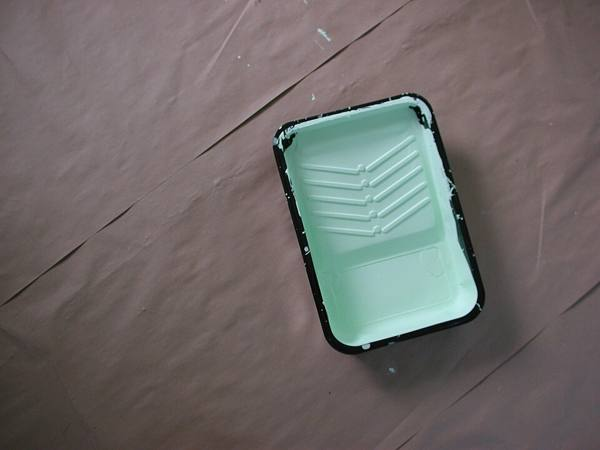 | le bac à peinture | paint tray | |
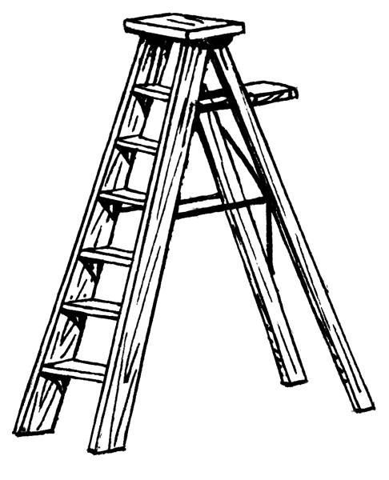 | l'escabeau | stepladder | |
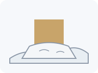 | la bâche de protection | dust sheet | |
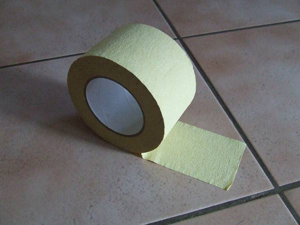 | le ruban de masquage | masking tape | |
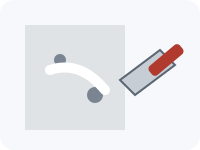 | l'enduit | filler | |
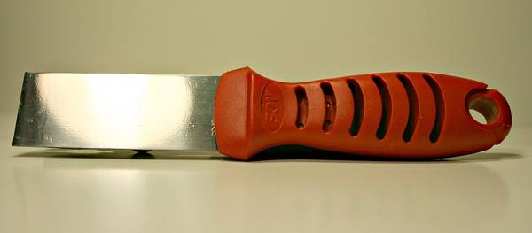 | le grattoir | scraper | |
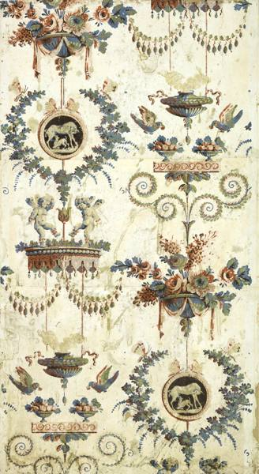 | le papier peint | wallpaper | |
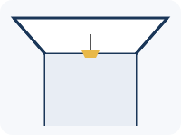 | le plafond | ceiling | |
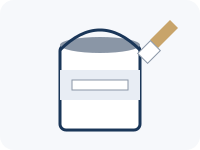 | la sous-couche | primer | |
| le nuancier | colour chart | ||
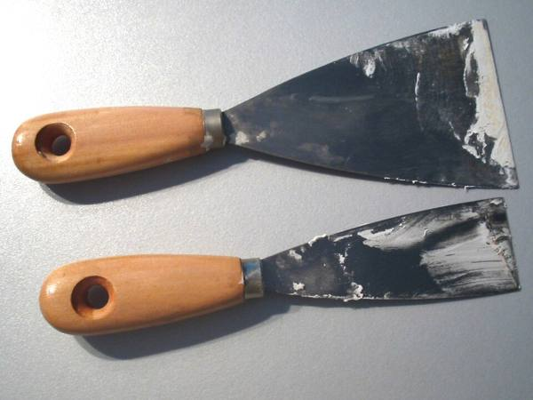 | le couteau à enduire | filling knife | |
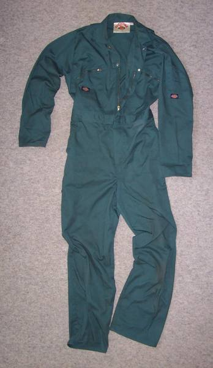 | la combinaison de travail | overalls | |
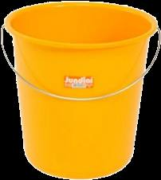 | le seau | bucket |
Teacher key: sentences at work
- Cover the floor with a ________. (dust sheet)
- Fill the holes with ________. (filler)
- Put ________ around the window. (masking tape)
- Choose a colour on the ________. (colour chart)
- Paint the wall with the ________. (paint roller)
- Stand on the ________ to paint the ceiling. (stepladder)
In steps 1, 2 and 3, the right answer is the line in the word list.
Image credits
Photos under an open licence, from Wikimedia Commons, resized for the phone. Original drawings for gestures and ideas.
- la peinture (paint) : photo by Ionenlaser, licence CC0, file page on Wikimedia Commons.
- le pinceau (paintbrush) : photo by Rhododendrites, licence CC BY-SA 4.0, file page on Wikimedia Commons.
- le rouleau (paint roller) : photo by Maggie, licence CC BY 2.0, file page on Wikimedia Commons.
- le bac à peinture (paint tray) : photo by Bart Everson from New Orleans, Louisiana, USA, licence CC BY 2.0, file page on Wikimedia Commons.
- l'escabeau (stepladder) : photo by Pearson Scott Foresman, licence Public domain, file page on Wikimedia Commons.
- la bâche de protection (dust sheet) : original drawing, Itinéraires et destinations, CC BY-NC-SA 4.0.
- le ruban de masquage (masking tape) : photo by Neitram, licence CC BY-SA 3.0, file page on Wikimedia Commons.
- l'enduit (filler) : original drawing, Itinéraires et destinations, CC BY-NC-SA 4.0.
- le grattoir (scraper) : photo by HomeSpot HQ, licence CC BY 2.0, file page on Wikimedia Commons.
- le papier peint (wallpaper) : photo by Jacquemart et Bérnard, licence Public domain, file page on Wikimedia Commons.
- le plafond (ceiling) : original drawing, Itinéraires et destinations, CC BY-NC-SA 4.0.
- la sous-couche (primer) : original drawing, Itinéraires et destinations, CC BY-NC-SA 4.0.
- le nuancier (colour chart) : original drawing, Itinéraires et destinations, CC BY-NC-SA 4.0.
- le couteau à enduire (filling knife) : photo by M.Minderhoud, licence CC BY-SA 3.0, file page on Wikimedia Commons.
- la combinaison de travail (overalls) : photo by User Stuz on en.wikipedia, licence CC BY-SA 3.0, file page on Wikimedia Commons.
- le seau (bucket) : photo by MarlonBSB, licence Public domain, file page on Wikimedia Commons.
Vocabulary sheet to print
Large type (16 point minimum), in three formats: